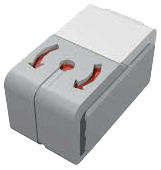
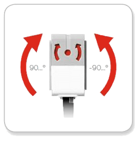
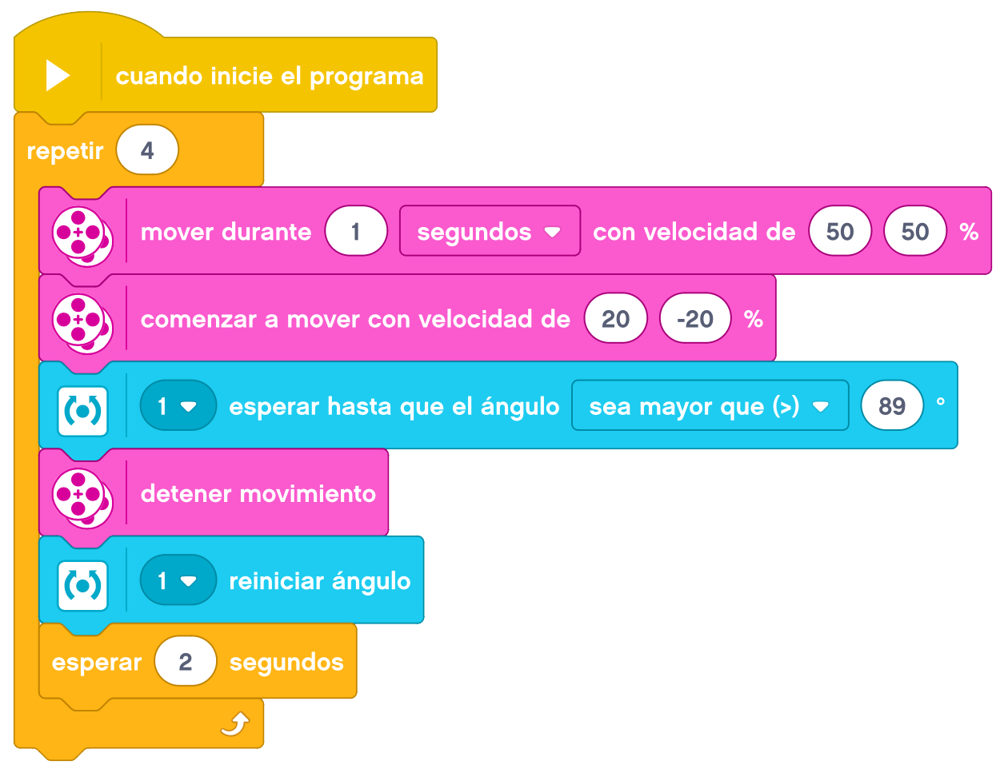

El sensor de giro o girosensor nos permite conocer los grados que varía nuestra posición en cada momento. En esta actividad aprenderemos a utilizar el sensor de giro para hacer girar nuestro robor un determinado número de grados o para actuar en consecuencia a la inclinación que tengamos.

El Girosensor es un sensor digital que detecta el movimiento de rotación en un eje simple.

Si rota el Girosensor en la dirección que indican las flechas que se encuentran en la caja del sensor, este puede detectar la razón de rotación en grados por segundo (el sensor puede medir una razón de giro máxima de 440 grados por segundo.

Entonces, se puede utilizar la razón de rotación para detectar, por ejemplo, si gira una parte del robot o
si el robot se cae.
Además, el Girosensor registra el ángulo de rotación total en grados. Se puede utilizar este ángulo de
rotación para detectar, por ejemplo, cuánto ha girado tu robot. Esta función permite programar giros
(sobre el eje que está midiendo el Girosensor) con una exactitud de +/- 3 grados en un giro de 90 grados.
Nota: El sensor debe estar totalmente quieto mientras se conecta al Bloque EV3. Si el Girosensor está conectado a un robot, el robot debe mantenerse quieto en su posición inicial mientras se conecta al Bloque EV3.
Empezaremos por montar nuestra Base Motriz a la que añadiremos el Sensor de Giro y le colocaremos los cables.
El primer reto consiste en realizar un cuadrado en la mesa. Partiendo de una de las esquinas, avanzaremos para
hacer uno de los lados y haremos un giro de 90º. Esto lo repetiremos 4 veces para completar el cuadrado. En
este caso, el sensor tiene que estar colocado con las flechas rojas en la cara de arriba ya que es este
plano el que vamos a controlar.
Un ejemplo de como podemos resolver el reto es el siguiente.

El segundo reto consiste en mantener al robot en una superficie en equilibrio. Lo tendremos que programar
para que si se inclina hacia adelante se mueva hacia atrás y vicersa. En este caso, el sensor tiene que
estar colocado con las flechas rojas en la cara lateral ya que es este plano el que vamos a controlar.
Un ejemplo de como podemos resolver el reto es el siguiente.